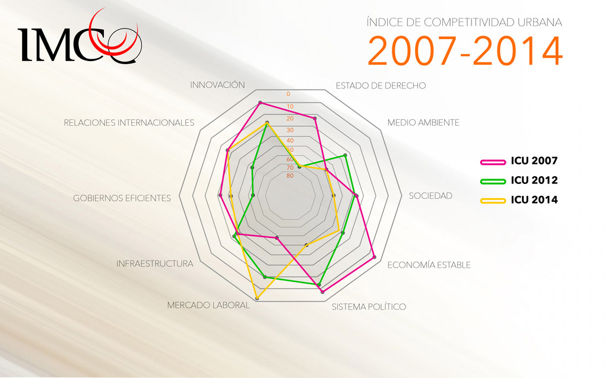
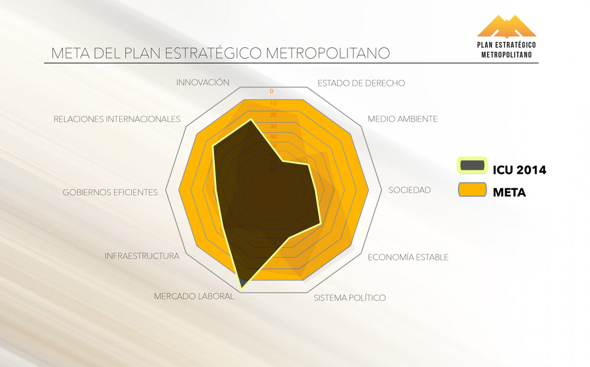

Competitividad y Planeación Metropolitana
Por Lic. Rodrigo González Morales
18/09/2014
El Instituto Mexicano para la Competitividad dio a conocer la semana anterior su Índice de Competitividad Urbana (ICU) 2014, en él muestra que la Zona Metropolitana de la Laguna (ZML) continúa en un nivel de competitividad media baja, e incluso perdió algunos lugares en ese ranking, ya que de 78 ciudades ocupamos el lugar 48.
En el IMPLAN, al trabajar con la información que nos muestra las fortalezas, debilidades y retos de nuestra ciudad, conocemos la complejidad de encontrar información reciente que además de ello sea plenamente confiable y comparable. Por ello entendemos que el IMCO utilice información de 2012 para poder evaluar y comparar a las principales metrópolis del país que concentrar el 83 % del PIB nacional, y que luchan entre ellas y con ciudades de todo el mundo por atraer inversiones, capacidades y talentos que provean calidad de vida a su población.
En el subíndice de Mercado Laboral, la ZML pasó del lugar 20 al 3, siendo la número 1 de las ciudades con más de un millón de habitantes. En Gobiernos Eficaces y Eficientes se dio una mejora notable pasando del lugar 63 al 49, al igual que en Relaciones internacionales donde se pasó del lugar 54 al 26. En Innovación y Sofisticación se mejoró en 2 lugares pasando del 29 al 27. En el subíndice de Sistema de Derecho la ZML se mantiene en el lugar 73, considerando que incluye datos de 2012, el año de mayores tasas de homicidios y robo de vehículos. El mayor descenso se da en Sistema Político Estable y Funcional donde se pasa del lugar 11 al 50, donde se agregó el indicador de periodistas muertos o desaparecidos, entre otras nuevas variables. Otros subíndices donde la zona metropolitana retrocedió fueron medio ambiente, sociedad, incluyente preparada y sana, economía estable y sectores precursores de clase mundial.
Índice de Competitividad Urbana 2007 – 2014
Entendemos también que el IMCO mida como una unidad a las zonas metropolitanas, pues a pesar de que cada uno de los 378 municipios que evalúa cuenta con sus propias características y vocaciones, comparten con su metrópoli recursos naturales, humanos, posición geográfica y problemáticas económicas, urbanas y sociales que no conocen fronteras administrativas.
Torreón cuenta con un volumen competitivo de tratamiento de aguas, pero presentó en 2012 una de las mayores tasas de homicidios del país. Cuenta con una vasta oferta cultural y una de los más altas tasas de organizaciones de la sociedad civil por habitante que aumenta la competitividad de la metrópoli, al igual que su cobertura y calidad educativa, sin embargo presenta 577 muertes anuales por diabetes y una de las tasas más bajas de camas de hospital público por habitante en el país.
Gómez Palacio, por su parte, presenta un porcentaje de ingresos propios municipales cercano al 50 % lo cual aporta competitividad a la zona, sin embargo entre 2008 y 2012 aumentaron en 30 mil las personas ocupadas en el empleo informal; cuenta con una actividad financiera fuerte representada por el número de créditos empresariales, además de aportar la mayor parte de la inversión extranjera directa que recibe la región, pero tiene bajos porcentajes de vivienda con computadora, y de alumnos con buen aprovechamiento.
Ciudad Lerdo aporta los mejores indicadores ambientales y culturales a la zona, pero también los de mayor desigualdad de ingreso entre hombres y mujeres y las peores condiciones de vivienda. Matamoros aporta territorio y conectividad pero resta en educación y finanzas públicas. Compartimos una alta productividad que nos da competitividad y una baja densidad poblacional que nos resta. Todo ello muestra la necesidad de políticas metropolitanas para mejorar la competitividad de forma homogénea y sostenida.
Por ello y a pesar de que estamos midiendo las mejoras para 2014 en varios indicadores como el desempleo, que a junio de este año bajó a 4.8 % siendo este menor a la media nacional o la baja en los delitos de alto impacto que nos restaron competitividad y reputación de 2006 a la fecha, es pertinente y urgente comenzar el camino a que la ZML recupere la competitividad y la calidad de vida perdidas y mejore y avance más rápido que cualquier otra ciudad como ya lo hizo en su momento.
Más allá de los cambios metodológicos que el IMCO realiza en cada edición del ICU, una constante en sus mediciones es que evalúa cada vez una mayor variedad de indicadores que abarcan el impacto de la acción gubernamental, privada y social, ya que no solo mide las finanzas y servicios públicos o el estado de derecho, de responsabilidad gubernamental, y ámbitos de acción de los distintos niveles de gobierno como el agua o la eficiencia judicial, sino también el número de empresas limpias, responsables e innovadoras, o la equidad de género en las remuneraciones que son del ámbito privado, o la participación ciudadana o el uso de tecnologías de información que corresponde a todos los ciudadanos.
No sabemos lo que harán otras ciudades, sin embargo si está en las manos de la sociedad y los gobiernos de nuestra zona metropolitana generar y seguir los planes y compromisos que lleven a la Laguna a la competitividad deseada, de ahí se desprende la pertinencia y urgencia del Plan Estratégico Metropolitano.